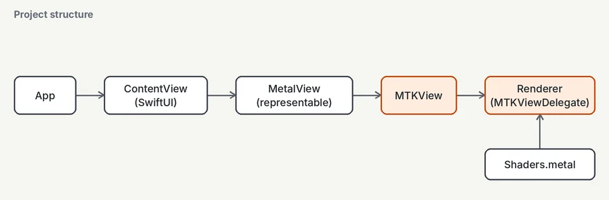

Getting Started
Project Setup#
Setting up a Metal project takes minutes. Metal ships with the system, so there is nothing to build before you can draw.
Use the Swift / C++ switch at the top of the page to pick your language. The chapters, the shaders and the live demos are the same for both; only the host code changes.
What you need#
- A Mac running a recent version of macOS.
- Xcode, free from the Mac App Store. C++ readers only need its command line tools.
The examples target macOS because it is the quickest loop: press Run and a window appears.
Everything except the few lines that host the view works unchanged on iOS, and the differences are shown below.
Simulator or device?
Metal works in the iOS Simulator, but with reduced features and performance. When you target iPhone or iPad, test on a real device.
Create the project#
- In Xcode choose File → New → Project.
- Pick macOS → App.
- Name it
LearnMetal, set Interface to SwiftUI and Language to Swift.
Xcode also offers a Game template with Metal as the technology. It generates a working spinning cube, which is nice to look at but hides the parts we want to write ourselves, so we start from a plain app.
MetalKit and MTKView#
To draw with Metal you need a surface that the system can put on screen. The low-level way is a CAMetalLayer plus your own display link. MetalKit wraps both in a view called MTKView that:
- owns the layer and hands you a fresh drawable (a texture that will be shown on screen) each frame,
- creates depth and multisample textures for you on request,
- calls your code once per display refresh.
You tell the view what to draw by giving it a delegate, an object that implements two methods of MTKViewDelegate. That delegate is our renderer, and it is where nearly all code in this series will live.
Host the view in SwiftUI#
MTKView is an AppKit view (UIKit on iOS), so SwiftUI needs a small adapter. Add a new Swift file MetalView.swift:
import SwiftUI
import MetalKit
struct MetalView: NSViewRepresentable {
final class Coordinator {
var renderer: Renderer?
}
func makeCoordinator() -> Coordinator { Coordinator() }
func makeNSView(context: Context) -> MTKView {
let view = MTKView()
context.coordinator.renderer = Renderer(view: view)
return view
}
func updateNSView(_ view: MTKView, context: Context) {}
}
The coordinator exists for one reason: MTKView holds its delegate weakly, so something else must keep the renderer alive.
On iOS the adapter is the same with different names: conform to UIViewRepresentable and implement makeUIView and updateUIView.
Then show the view in ContentView.swift:
import SwiftUI
struct ContentView: View {
var body: some View {
MetalView()
.frame(minWidth: 800, minHeight: 600)
}
}
The project will not compile yet because Renderer does not exist. That is the next chapter.

Where shaders go#
Shaders live in files with the .metal extension. Create one with File → New → File → Metal File and call it Shaders.metal. Xcode gives it this content:
#include <metal_stdlib>
using namespace metal;
Leave it for now. Any .metal file that belongs to the app target is compiled during the build and bundled into the app automatically.
Turn on the safety nets#
Open Product → Scheme → Edit Scheme → Run → Diagnostics (in some Xcode versions the Metal options are under Options) and make sure Metal API Validation is enabled. Validation checks every Metal call and stops with a readable message when you do something illegal, instead of showing a black screen. It is on by default for debug runs, and you should leave it on. Shader Validation in the same place catches out-of-bounds reads and similar mistakes inside shaders; turn it on whenever a shader misbehaves.
metal-cpp#
Metal is an Objective-C API. metal-cpp is Apple's official header-only C++ wrapper around it: every Metal class and method gets a C++ equivalent with no overhead. Download it from developer.apple.com/metal/cpp and unzip it into your project as a metal-cpp folder.
The mapping from the Objective-C and Swift names is mechanical:
| Swift | C++ with metal-cpp |
|---|---|
MTLDevice, MTLBuffer |
MTL::Device*, MTL::Buffer* |
device.makeCommandQueue() |
device->newCommandQueue() |
MTLRenderPipelineDescriptor() |
MTL::RenderPipelineDescriptor::alloc()->init() |
descriptor.colorAttachments[0].pixelFormat = .bgra8Unorm |
descriptor->colorAttachments()->object(0)->setPixelFormat(MTL::PixelFormatBGRA8Unorm) |
encoder.setVertexBuffer(buffer, offset: 0, index: 0) |
encoder->setVertexBuffer(buffer, 0, 0) |
"vertex_main" |
MTLSTR("vertex_main") |
Three rules cover memory management, because there is no ARC in C++:
- Objects you get from a method that starts with
new, or fromalloc()->init(), are yours. Callrelease()when you are done. - Everything else is autoreleased: valid until the enclosing
NS::AutoreleasePoolis released. Create a pool at the top of every frame. - To keep an autoreleased object, call
retain().
The implementation of the wrapper must be compiled exactly once. Create metal_impl.cpp:
#define NS_PRIVATE_IMPLEMENTATION
#define CA_PRIVATE_IMPLEMENTATION
#define MTL_PRIVATE_IMPLEMENTATION
#include <Foundation/Foundation.hpp>
#include <Metal/Metal.hpp>
#include <QuartzCore/QuartzCore.hpp>
A window#
metal-cpp wraps Metal, Foundation and QuartzCore. It does not wrap AppKit or MetalKit, so there is no MTKView. We open a window with GLFW (brew install glfw cmake) and attach a CAMetalLayer to it. That one step has to touch AppKit, so it lives in a tiny Objective-C++ file, glfw_bridge.mm:
#import <Cocoa/Cocoa.h>
#import <Metal/Metal.h>
#import <QuartzCore/CAMetalLayer.h>
#define GLFW_EXPOSE_NATIVE_COCOA
#include <GLFW/glfw3.h>
#include <GLFW/glfw3native.h>
// Gives the GLFW window a CAMetalLayer and returns it. The view keeps the layer alive.
void* attachMetalLayer(GLFWwindow* window, void* device) {
NSWindow* nsWindow = glfwGetCocoaWindow(window);
CAMetalLayer* layer = [CAMetalLayer layer];
layer.device = (__bridge id<MTLDevice>)device;
layer.pixelFormat = MTLPixelFormatBGRA8Unorm;
nsWindow.contentView.wantsLayer = YES;
nsWindow.contentView.layer = layer;
return (__bridge void*)layer;
}
main.cpp creates the window, the device and the renderer, and runs the loop:
#include <GLFW/glfw3.h>
#include "Renderer.hpp"
void* attachMetalLayer(GLFWwindow* window, void* device);
int main() {
glfwInit();
glfwWindowHint(GLFW_CLIENT_API, GLFW_NO_API); // no OpenGL context
GLFWwindow* window = glfwCreateWindow(800, 600, "LearnMetal", nullptr, nullptr);
MTL::Device* device = MTL::CreateSystemDefaultDevice();
auto* layer = static_cast<CA::MetalLayer*>(attachMetalLayer(window, device));
Renderer renderer(device, layer);
while (!glfwWindowShouldClose(window)) {
glfwPollEvents();
// The drawable follows the window size, in pixels.
int width, height;
glfwGetFramebufferSize(window, &width, &height);
layer->setDrawableSize(CGSizeMake(width, height));
renderer.resize(width, height);
renderer.draw();
}
device->release();
glfwDestroyWindow(window);
glfwTerminate();
}
The layer plays the role that MTKView plays in Swift: it hands out a drawable, a texture that will be shown on screen, each time you ask for one. Presenting a drawable waits for the display, so this loop runs at the screen's refresh rate.
Wherever a chapter mentions MTKView, the C++ equivalent is one of three things you do yourself: ask the layer for the next drawable, fill in a render pass descriptor, or create a depth texture. Each is shown the first time it is needed.
Building with CMake#
cmake_minimum_required(VERSION 3.20)
project(LearnMetal LANGUAGES CXX OBJCXX)
set(CMAKE_CXX_STANDARD 17)
find_package(glfw3 REQUIRED)
add_executable(LearnMetal main.cpp Renderer.cpp metal_impl.cpp glfw_bridge.mm)
target_include_directories(LearnMetal PRIVATE metal-cpp)
target_link_libraries(LearnMetal PRIVATE glfw
"-framework Metal" "-framework Foundation" "-framework QuartzCore" "-framework Cocoa")
# Copy the shader source next to the executable; it is compiled when the app starts.
configure_file(Shaders.metal ${CMAKE_BINARY_DIR}/Shaders.metal COPYONLY)
cmake -B build && cmake --build build && cd build && ./LearnMetal
The project will not build yet because Renderer does not exist. That is the next chapter.
Where shaders go#
Shaders live in a file called Shaders.metal:
#include <metal_stdlib>
using namespace metal;
Xcode compiles .metal files at build time. Outside Xcode the simplest route is to compile the source when the app starts, which also means a shader error is reported with its line number in the terminal:
#include <fstream>
#include <iostream>
#include <sstream>
MTL::Library* loadLibrary(MTL::Device* device, const char* path) {
std::ifstream file(path);
std::stringstream source;
source << file.rdbuf();
NS::Error* error = nullptr;
MTL::Library* library = device->newLibrary(
NS::String::string(source.str().c_str(), NS::UTF8StringEncoding), nullptr, &error);
if (!library) {
std::cerr << "Shader error: " << error->localizedDescription()->utf8String() << "\n";
std::exit(1);
}
return library;
}
For a shipping app you would precompile with xcrun metal and xcrun metallib and load the resulting .metallib file.
Turn on the safety nets#
Metal's validation layer checks every call and stops with a readable message when you do something illegal, instead of showing a black screen. Outside Xcode, enable it with environment variables:
MTL_DEBUG_LAYER=1 MTL_SHADER_VALIDATION=1 ./LearnMetal
Leave MTL_DEBUG_LAYER on whenever you are developing. A starter project with all the files from this chapter and the next two is in the repository's examples-cpp folder.
The Debugging chapter covers these tools in depth. You can read it at any time.